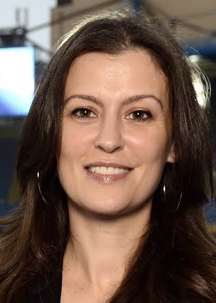

Careers In Economics

There are many differing careers in economics from ranging on a micro level to a MACRO level. Micro meaning at the scale of your economics or your Businesse's economics. MACRO Economics means at goverment scale or at a scale where you look at many micro scales combined. These jobs also have different kinds of universities that will support you career. You can click the button to see more about your education.
Woman in Economics

There have been many i Influential woman in the world of buissness. One of those woman is Marina Granovskaia. Granovskaia was involved in transfers for Chelsea, becoming the representative of the owner of the club in 2010, then joining the Chelsea board in June 2013. In 2014, she got promoted to chief executive of the club. The Times stated that the promotion made her the "most powerful woman in football.”. In 2018, Forbes ranked her Number 5 in "Most Powerful Women in International Sports" list. Marina Granovskaia received the Best Club Director in European Football award at the Golden Boy Awards on 13th of Dec 2021. She is probably the most influential person in the transfer world of football.